|
|
How to use Satellite Compass ?
|
Welcome to Satellite Compass. This app is: - a compass, including displaying the current GPS location, location accuracy in meters and the declination, - a "finding your way help" in pointing you to a location with the help of the compass, - a satellite finder or dish pointer, including obstacle view.
For the menu click on , and to take a screenshot click on Read this page about calibrating the compass of a phone.
The compass values and magnetic field are displayed in the bottem part of the display.
How to report a problem with Satellite Compass ? Click here !!The Privacy Policy
|
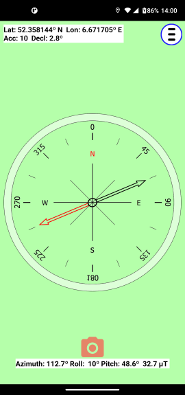 |
 .
.
| Your Current Location is determined by the phone's GPS but if you wish you can manually input the coordinates or an address.
The GPS coordinates are displayed in the top part of the display. The address field is only available when you are connected to the internet. The address field is red when there is no address available. Push button Save Location to start using the manual location.
Push button Use GPS location to get the current GPS coordinates. |
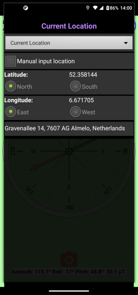 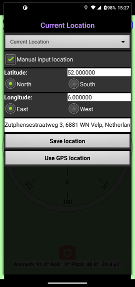 |
| Select Point to Location if you want to know the direction, in azimuth, to a location.
A dark green compass needle points to the desired location on the earth, a radio station, a parked car, a city, a street or a house.
The coordinates, the azimuth and the distance to the location are displayed in the top part of the display. The address field is only available when you are connected to the internet. The address field is red when there is no address available.
Push button Use GPS location to get the current GPS coordinates as "Point to Location". |
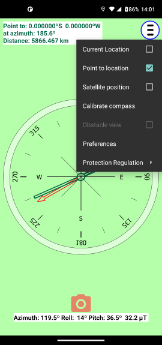 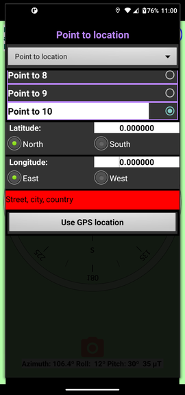 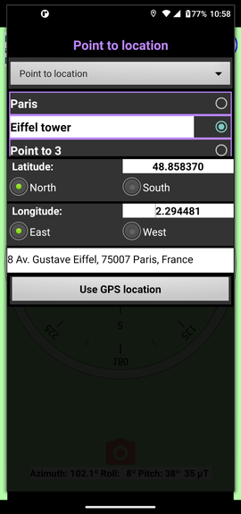 |
|
Select Satellite Position if you want to point to a satellite dish to a satellite. A blue compass needle is added that points horizontally to the position of the satellite. The obstacle view is avaiable to check if the satellite signal is not blocked by something. There is no default list of satellites. Instead you can self define a list of satellites, up to 25 satellites. When connected to the internet, you can find the position of the satellite with the help of some specialized websites. Just tap on the websites URL. The satellite, its compass azimuth, its elevation and the required skew are displayed in the top part of the display. 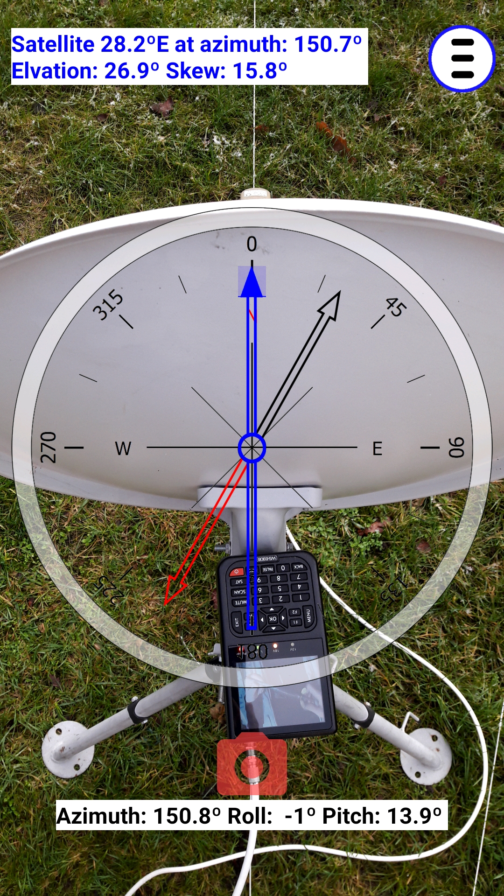 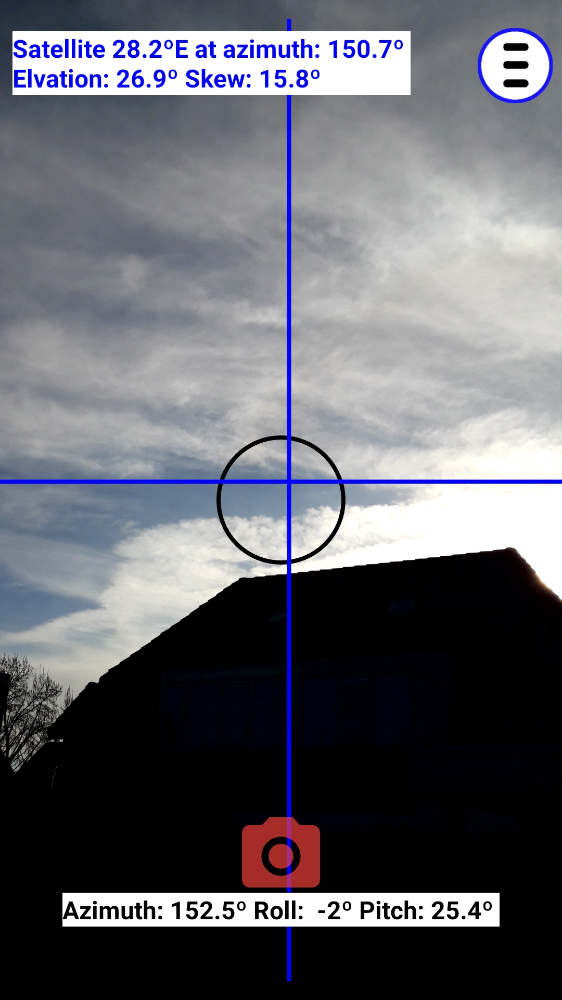
|
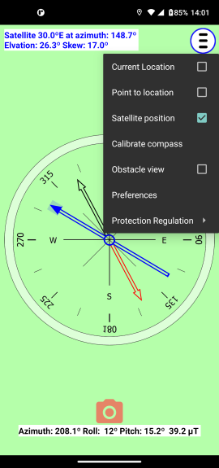 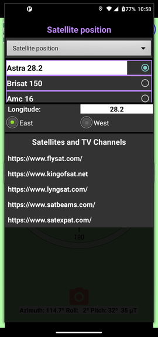 |
|
The Preferences screen is available to: - select a language, - to set a compass offset value. Normally this value is 0.0 but in the rare case where the compass has a constant deviation you can enter an offset value to compensate the deviation. - to hide the compass needle when pointing to a location or finding a ssatellite. - to backup the Point To Locations and Satellites - to restore the Point To Locations and Satellites - the size of the list with Satellites [1 .. 25] - the size of the list with Point To Locations [1 .. 25] - the version (and build number) of the app you are using. The backup is stored in the Download directory under SatelliteCompass.
There is also information about Protection Regulation.
|
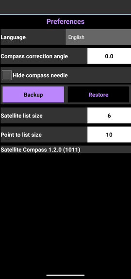 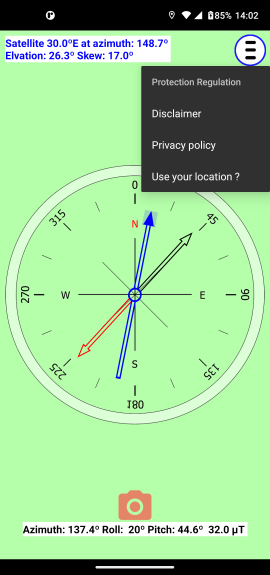 |
|
The backup is stored in the Download directory under SatelliteCompass. File names are: _satellites_.csv and _points_.csv The files can be editted. The format of each line is: <latitude> ; <longitude> ; <altitude> ; <name>
with:
Examples: |
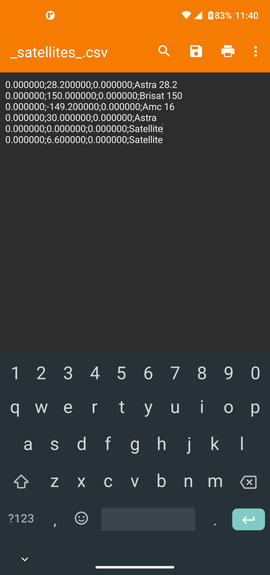 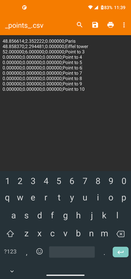 |
Ad by Google.